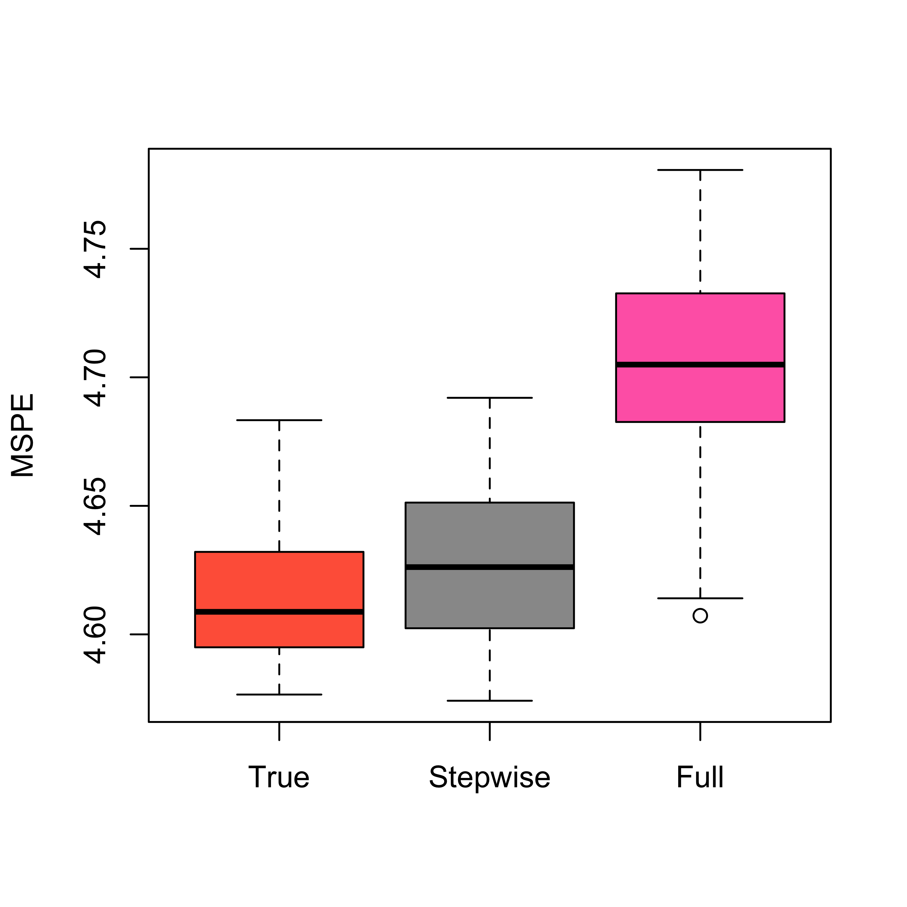
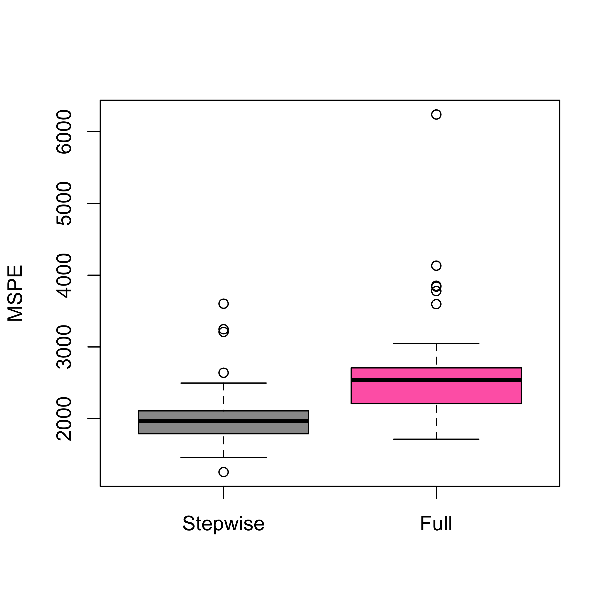
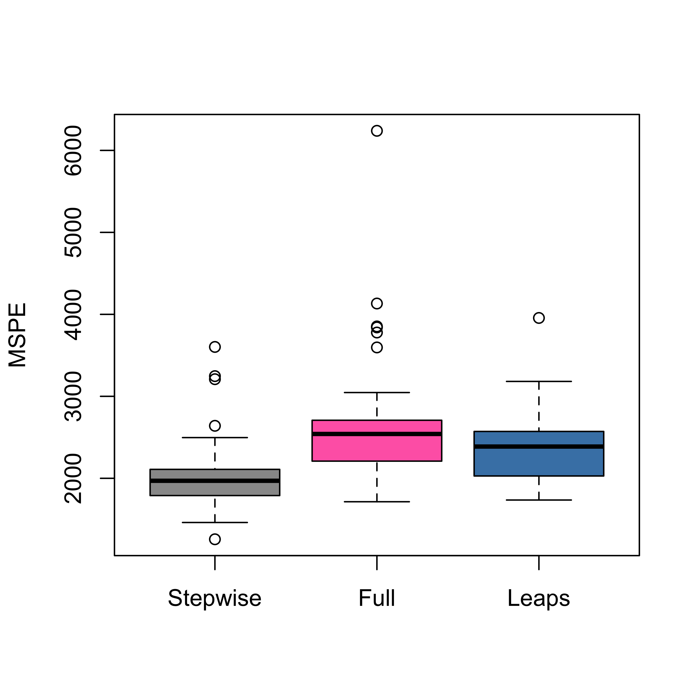

set.seed(123)
x1 <- rnorm(506)
x2 <- rnorm(506, mean = 2, sd = 1)
x3 <- rexp(506, rate = 1)
x4 <- x2 + rnorm(506, sd = .1)
x5 <- x1 + rnorm(506, sd = .1)
x6 <- x1 - x2 + rnorm(506, sd = .1)
x7 <- x1 + x3 + rnorm(506, sd = .1)
y <- x1 * 3 + x2 / 3 + rnorm(506, sd = 2.2)
x <- data.frame(
y = y, x1 = x1, x2 = x2,
x3 = x3, x4 = x4, x5 = x5, x6 = x6, x7 = x7
)
library(MASS)
null <- lm(y ~ 1, data = x)
full <- lm(y ~ ., data = x)
st <- stepAIC(null, scope = list(lower = null, upper = full), trace = FALSE)4 Comparing models
4.1 General strategy
Suppose we have a set of competing models from which we want to choose the “best” one. In order to properly define our problem we need the following:
- a list of models to be considered;
- a numerical measure to compare any two models in our list;
- a strategy (algorithm, criterion) to navigate the set of models; and
- a criterion to stop the search.
For example, in stepwise methods the models under consideration in each step are those that differ from the current model only by one coefficient (variable). The numerical measure used to compare models could be AIC, or Mallow’s Cp, etc. The strategy is to only consider submodels with one fewer variable than the current one, and we stop if either none of these “p-1” submodels is better than the current one, or we reach an empty model.
4.2 What is AIC?
One intuitively sensible quantity that can be used to compare models is a distance measuring how “close” the distributions implied by these models are from the actual stochastic process generating the data (here “stochastic process” refers to the random mechanism that generated the observations). In order to do this we need:
- a distance / metric (or at least a “quasimetric”) between models; and
- a way of estimating this distance when the “true” model is unknown.
AIC provides an unbiased estimator of the Kullback-Leibler divergence between the estimated model and the “true” one. See the lecture slides for more details.
4.3 Using stepwise + AIC to select a model
We apply stepwise regression based on AIC to select a linear regression model for the airpollution data. In R we can use the function stepAIC in package MASS to perform a stepwise search, for the synthetic data set discussed in class:
If you want to see the progression of the search step-by-step, set the argument trace=TRUE in the call to stepAIC above. The selected model is automatically fit and returned, so that in the code above st is an object of class lm containing the “best” linear regression fit.
st
#>
#> Call:
#> lm(formula = y ~ x1 + x6, data = x)
#>
#> Coefficients:
#> (Intercept) x1 x6
#> -0.000706 3.175239 -0.282906We will now compare the mean squared prediction errors of the full model and that selected with stepwise. We use 50 runs of 5-fold CV, and obtain the following:
k <- 5
n <- nrow(x)
ii <- (1:n) %% k + 1
set.seed(123)
N <- 50
mspe.t <- mspe.f <- mspe.st <- rep(0, N)
for (i in 1:N) {
ii <- sample(ii)
pr.t <- pr.f <- pr.st <- rep(0, n)
for (j in 1:k) {
x0 <- x[ii != j, ]
null0 <- lm(y ~ 1, data = x0)
full0 <- lm(y ~ ., data = x0) # needed for stepwise
true0 <- lm(y ~ x1 + x2, data = x0)
step.lm0 <- stepAIC(null0, scope = list(lower = null0, upper = full0), trace = FALSE)
pr.st[ii == j] <- predict(step.lm0, newdata = x[ii == j, ])
pr.f[ii == j] <- predict(full0, newdata = x[ii == j, ])
pr.t[ii == j] <- predict(true0, newdata = x[ii == j, ])
}
mspe.st[i] <- mean((x$y - pr.st)^2)
mspe.f[i] <- mean((x$y - pr.f)^2)
mspe.t[i] <- mean((x$y - pr.t)^2)
}
boxplot(mspe.st, mspe.f,
names = c("Stepwise", "Full"),
col = c("gray60", "hotpink"), ylab = "MSPE"
)
Note that since this is a synthetic data set, we can also estimate the MSPE of the true model (could we compute it analytically instead?) and compare it with that of the full and stepwise models. We obtain:
boxplot(mspe.t, mspe.st, mspe.f,
names = c("True", "Stepwise", "Full"),
col = c("tomato", "gray60", "hotpink"), ylab = "MSPE"
)
4.3.1 Stepwise applied to the “air pollution” data
We now use stepwise on the air pollution data to select a model, and estimate its MSPE using 5-fold CV. We compare the predictions of this model with that of the full model.
library(MASS)
airp <- read.table("data/rutgers-lib-30861_CSV-1.csv", header = TRUE, sep = ",")
null <- lm(MORT ~ 1, data = airp)
full <- lm(MORT ~ ., data = airp)
(tmp.st <- stepAIC(full, scope = list(lower = null), trace = FALSE))
#>
#> Call:
#> lm(formula = MORT ~ PREC + JANT + JULT + OVR65 + POPN + EDUC +
#> NONW + HC + NOX, data = airp)
#>
#> Coefficients:
#> (Intercept) PREC JANT JULT OVR65 POPN
#> 1934.0539 1.8565 -2.2620 -3.3200 -10.9205 -137.3831
#> EDUC NONW HC NOX
#> -23.4211 4.6623 -0.9221 1.8710k <- 5
n <- nrow(airp)
ii <- (1:n) %% k + 1
set.seed(123)
N <- 50
mspe.f <- mspe.st <- rep(0, N)
for (i in 1:N) {
ii <- sample(ii)
pr.f <- pr.st <- rep(0, n)
for (j in 1:k) {
x0 <- airp[ii != j, ]
null0 <- lm(MORT ~ 1, data = x0)
full0 <- lm(MORT ~ ., data = x0) # needed for stepwise
step.lm0 <- stepAIC(null0, scope = list(lower = null0, upper = full0), trace = FALSE)
pr.st[ii == j] <- predict(step.lm0, newdata = airp[ii == j, ])
pr.f[ii == j] <- predict(full0, newdata = airp[ii == j, ])
}
mspe.st[i] <- mean((airp$MORT - pr.st)^2)
mspe.f[i] <- mean((airp$MORT - pr.f)^2)
}
boxplot(mspe.st, mspe.f,
names = c("Stepwise", "Full"),
col = c("gray60", "hotpink"), ylab = "MSPE"
)
We can also use the package leaps to run a more thorough search among all possible subsets. We do this with the air pollution data:
library(leaps)
a <- leaps(x = as.matrix(airp[, -16]), y = airp$MORT, int = TRUE, method = "Cp", nbest = 10)In the call above we asked leaps to compute the 10 best models of each size, according to Mallow’s Cp criterion. We can look at the returned object
str(a)
#> List of 4
#> $ which: logi [1:141, 1:15] FALSE FALSE TRUE FALSE FALSE FALSE ...
#> ..- attr(*, "dimnames")=List of 2
#> .. ..$ : chr [1:141] "1" "1" "1" "1" ...
#> .. ..$ : chr [1:15] "1" "2" "3" "4" ...
#> $ label: chr [1:16] "(Intercept)" "1" "2" "3" ...
#> $ size : num [1:141] 2 2 2 2 2 2 2 2 2 2 ...
#> $ Cp : num [1:141] 53.6 82.3 82.6 97 97.2 ...We now find the best model (based on Mallow’s Cp), and fit the corresponding model:
j0 <- which.min(a$Cp)
(m1 <- lm(MORT ~ ., data = airp[, c(a$which[j0, ], TRUE)]))
#>
#> Call:
#> lm(formula = MORT ~ ., data = airp[, c(a$which[j0, ], TRUE)])
#>
#> Coefficients:
#> (Intercept) PREC JANT JULT EDUC NONW
#> 1180.3565 1.7970 -1.4836 -2.3553 -13.6190 4.5853
#> SO.
#> 0.2596We compare which variables are used in this model with those used in the model found with stepwise:
formula(m1)[[3]]
#> PREC + JANT + JULT + EDUC + NONW + SO.
formula(tmp.st)[[3]]
#> PREC + JANT + JULT + OVR65 + POPN + EDUC + NONW + HC + NOXIt is reasonable to ask whether the model found by leaps is much better than the one returned by stepAIC:
extractAIC(m1)
#> [1] 7.0000 429.0017
extractAIC(tmp.st)
#> [1] 10.000 429.634Finally, what is the MSPE of the model found by leaps?
# proper way
k <- 5
n <- nrow(airp)
ii <- (1:n) %% k + 1
set.seed(123)
N <- 50
mspe.l <- rep(0, N)
for (i in 1:N) {
ii <- sample(ii)
pr.l <- rep(0, n)
for (j in 1:k) {
x0 <- airp[ii != j, ]
tmp.leaps <- leaps(x = as.matrix(x0[, -16]), y = as.vector(x0[, 16]), int = TRUE, method = "Cp", nbest = 10)
j0 <- which.min(tmp.leaps$Cp)
step.leaps <- lm(MORT ~ ., data = x0[, c(tmp.leaps$which[j0, ], TRUE)])
pr.l[ii == j] <- predict(step.leaps, newdata = airp[ii == j, ])
}
mspe.l[i] <- mean((airp$MORT - pr.l)^2)
}
boxplot(mspe.st, mspe.f, mspe.l,
names = c("Stepwise", "Full", "Leaps"),
col = c("gray60", "hotpink", "steelblue"), ylab = "MSPE"
)
Note that a “suboptimal” model (stepwise) seems to be better than the one found with a “proper” (exhaustive) search, as that returned by leaps. This is intriguing, but we will see the same phenomenon occur in different contexts later in the course.
4.4 An example where one may not need to select variables
In some cases one may not need to select a subset of explanatory variables, and in fact, doing so may affect negatively the accuracy of the resulting predictions. In what follows we discuss such an example. Consider the credit card data set that contains information on credit card users. The interest is in predicting the balance carried by a client. We first load the data, and to simplify the presentation here we consider only the numerical explanatory variables:
x <- read.table("data/Credit.csv", sep = ",", header = TRUE, row.names = 1)
x <- x[, c(1:6, 11)]There are 6 available covariates, and a stepwise search selects a model with 5 of them (discarding Education):
library(MASS)
null <- lm(Balance ~ 1, data = x)
full <- lm(Balance ~ ., data = x)
(tmp.st <- stepAIC(null, scope = list(lower = null, upper = full), trace = 0))
#>
#> Call:
#> lm(formula = Balance ~ Rating + Income + Limit + Age + Cards,
#> data = x)
#>
#> Coefficients:
#> (Intercept) Rating Income Limit Age Cards
#> -449.3610 2.0224 -7.5621 0.1286 -0.8883 11.5527It is an easy exercise to check that the MSPE of this smaller model is in fact worse than the one for the full one:
n <- nrow(x)
k <- 5
ii <- (1:n) %% k + 1
set.seed(123)
N <- 100
mspe.st <- mspe.f <- rep(0, N)
for (i in 1:N) {
ii <- sample(ii)
pr.f <- pr.st <- rep(0, n)
for (j in 1:k) {
null <- lm(Balance ~ 1, data = x[ii != j, ])
full <- lm(Balance ~ ., data = x[ii != j, ])
tmp.st <- stepAIC(null, scope = list(lower = null, upper = full), trace = 0)
pr.st[ii == j] <- predict(tmp.st, newdata = x[ii == j, ])
pr.f[ii == j] <- predict(full, newdata = x[ii == j, ])
}
mspe.st[i] <- mean((x$Balance - pr.st)^2)
mspe.f[i] <- mean((x$Balance - pr.f)^2)
}
boxplot(mspe.st, mspe.f,
names = c("Stepwise", "Full"),
col = c("tomato", "springgreen"), cex.axis = 1.5,
cex.lab = 1.5, cex.main = 2
)
mtext(expression(hat(MSPE)), side = 2, line = 2.5)